Given some unobserved explanatory variables and observed dependent variables, the Normal theory factor analysis model estimates the latent factors. The model is implemented using a Markov Chain Monte Carlo algorithm (Gibbs sampling with data augmentation). For factor analysis with ordinal dependent variables, see ordered factor analysis (), and for a mix of types of dependent variables, see the mixed factor analysis model ().
With reference classes:
z5 <- zfactorbayes$new()
z5$zelig(cbind(Y1 ,Y2, Y3) ~ NULL, factors = 2,
model = "factor.bayes", data = mydata)
With the Zelig 4 compatibility wrappers:
z.out <- zelig(cbind(Y1 ,Y2, Y3) ~ NULL, factors = 2,
model = "factor.bayes", data = mydata)
zelig() takes the following functions for factor.bayes:
In addition, zelig() accepts the following additional arguments for model specification:
 th loading for
the variable named varname to be equal to c.th loading for
the variable named varname to be positive;th loading for
the variable named varname to be negative.
th loading for
the variable named varname to be equal to c.th loading for
the variable named varname to be positive;th loading for
the variable named varname to be negative.In addition, zelig() accepts the following additional inputs for bayes.factor:
 ) is printed to the screen.
) is printed to the screen. , either a scalar (all unconstrained loadings are set
to that value), or a matrix with compatible dimensions. The default
is NA, where the start value are set to be 0 for unconstrained
factor loadings, and 0.5 or
, either a scalar (all unconstrained loadings are set
to that value), or a matrix with compatible dimensions. The default
is NA, where the start value are set to be 0 for unconstrained
factor loadings, and 0.5 or  0.5 for constrained factor
loadings (depending on the nature of the constraints).
0.5 for constrained factor
loadings (depending on the nature of the constraints). are
set to be this value), or a vector with length equal to the number of
manifest variables. In the latter case, the starting values of the
diagonal elements of take the values of Psi.start.
The default value is NA where the starting values of the all the
uniquenesses are set to be 0.5.
are
set to be this value), or a vector with length equal to the number of
manifest variables. In the latter case, the starting values of the
diagonal elements of take the values of Psi.start.
The default value is NA where the starting values of the all the
uniquenesses are set to be 0.5.The model also accepts the following additional arguments to specify prior parameters:
. If a
scalar value, that value will be the prior mean for all the factor
loadings. Defaults to 0.. If L0 takes a scalar value, then the precision
matrix will be a diagonal matrix with the diagonal elements set to
that value. The default value is 0, which leads to an improper prior.Zelig users may wish to refer to help(MCMCfactanal) for more information.
Attaching the sample dataset:
data(swiss)
names(swiss) <- c("Fert", "Agr", "Exam", "Educ", "Cath", "InfMort")
Factor analysis:
z.out <- zelig(cbind(Agr, Exam, Educ, Cath, InfMort) ~ NULL,
model = "factor.bayes", data = swiss, factors = 2, verbose = TRUE,
a0 = 1, b0 = 0.15, burnin = 5000, mcmc = 50000)
Checking for convergence before summarizing the estimates:
algor <- try(geweke.diag(z.out$coefficients), silent=T)
if (class(algor) == "try-error")
print(algor)
Since the algorithm did not converge, we now add some constraints on
to optimize the algorithm:
z.out <- zelig(cbind(Agr, Exam, Educ, Cath, InfMort) ~ NULL,
model = "factor.bayes", data = swiss, factors = 2,
lambda.constraints = list(Exam = list(1,"+"),
Exam = list(2,"-"), Educ = c(2, 0),
InfMort = c(1, 0)),
verbose = TRUE, a0 = 1, b0 = 0.15,
burnin = 5000, mcmc = 50000)
geweke.diag(z.out$coefficients)
heidel.diag(z.out$coefficients)
raftery.diag(z.out$coefficients)
summary(z.out)
Suppose for observation  we observe
we observe  variables and
hypothesize that there are underlying factors such that:
variables and
hypothesize that there are underlying factors such that:
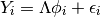
where  is the vector of manifest variables for
observation . is the 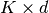 factor
loading matrix and 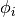 is the -vector of latent
factor scores. Both and
is the vector of manifest variables for
observation . is the 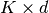 factor
loading matrix and 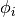 is the -vector of latent
factor scores. Both and  need to be
estimated.
need to be
estimated.
The stochastic component is given by:
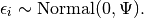
where is a diagonal, positive definite matrix. The
diagonal elements of are referred to as uniquenesses.
The systematic component is given by
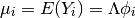
The independent conjugate prior for each 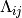 is given by
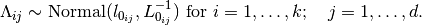
The independent conjugate prior for each 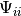 is given by
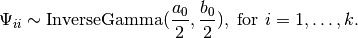
The prior for is
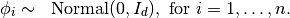
where 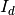 is a :math:` dtimes d ` identity matrix.
The output of each Zelig command contains useful information which you may view. For example, if you run:
z.out <- zelig(cbind(Y1, Y2, Y3), model = "factor.bayes", data)
then you may examine the available information in z.out by using names(z.out), see the draws from the posterior distribution of the coefficients by using z.out$coefficients, and view a default summary of information through summary(z.out). Other elements available through the $ operator are listed below.